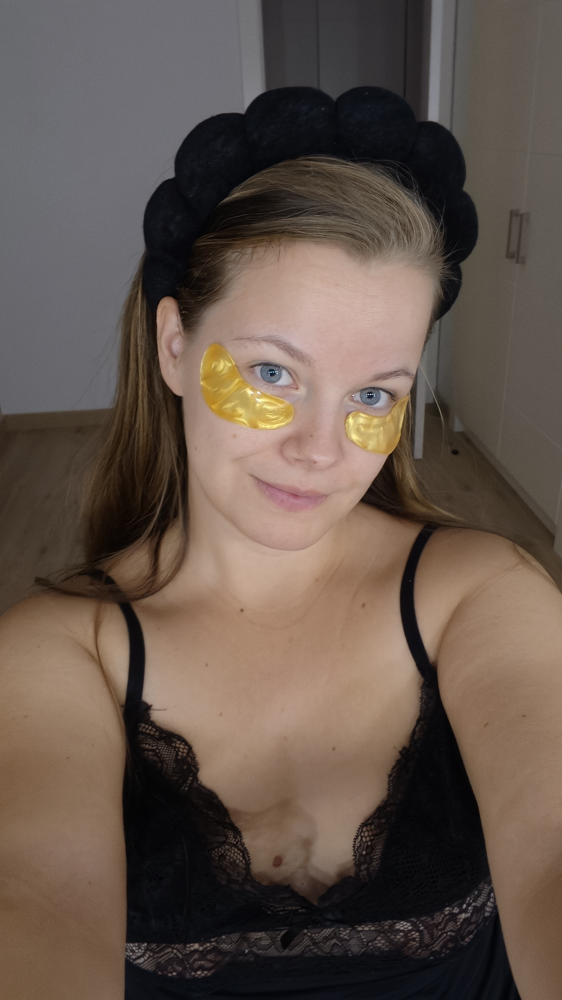
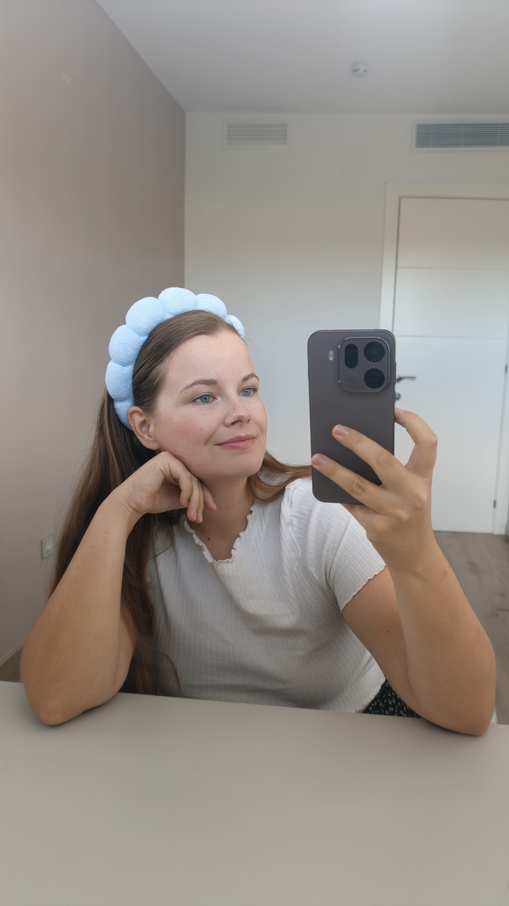
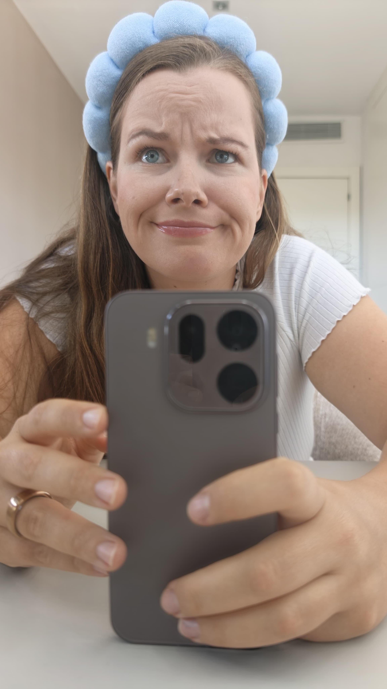
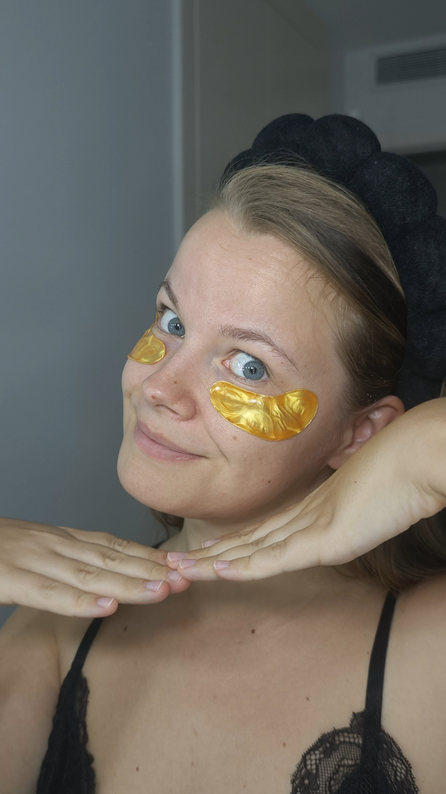
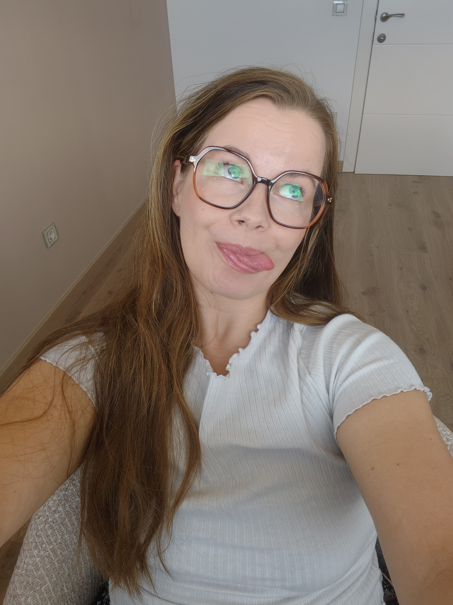
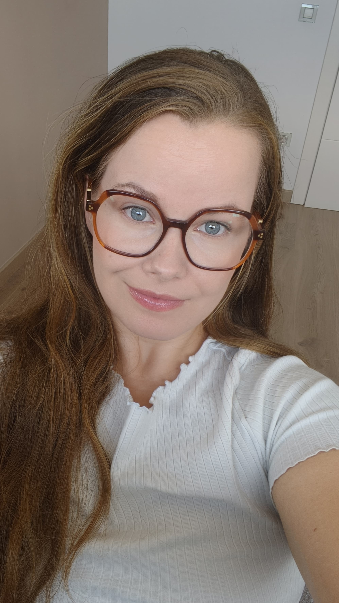
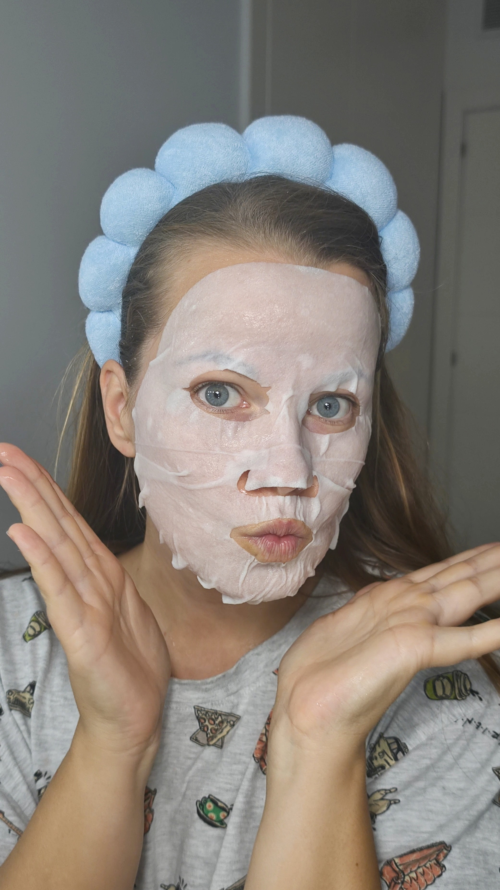
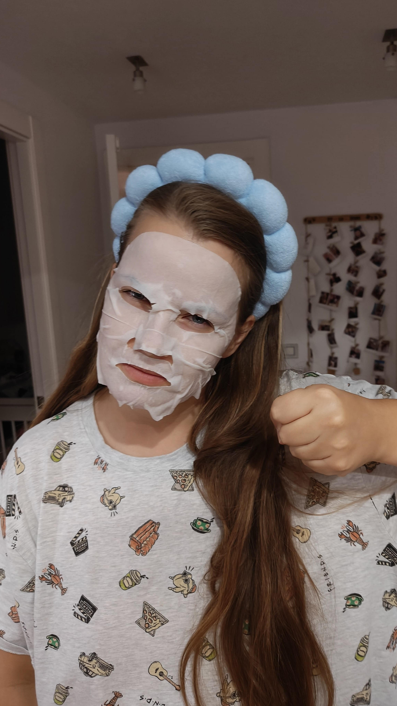
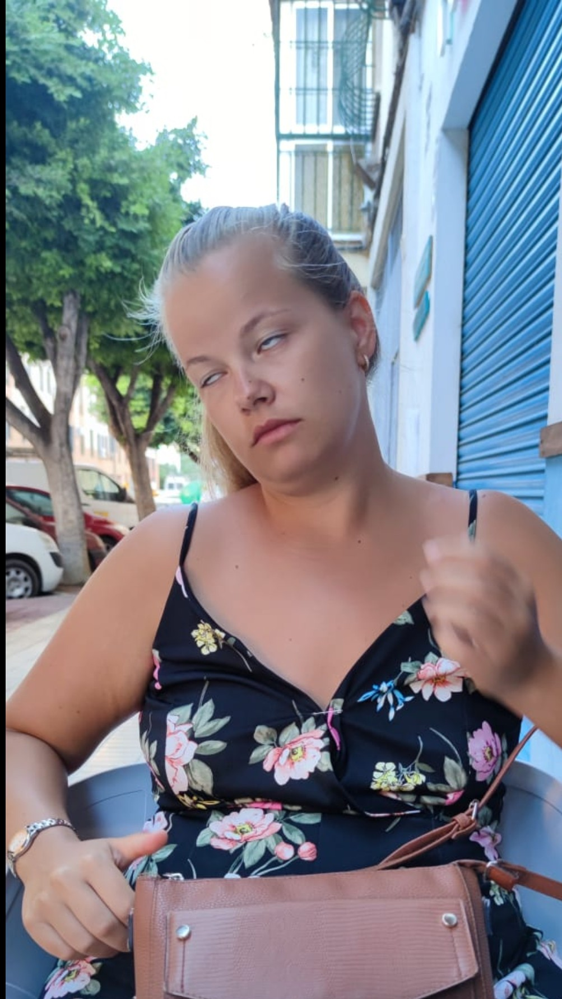

Sopravvivere da expat
Todo lo que me habría gustado saber antes de mudarme. Choque cultural, cenar a las ocho, supermercados cerrados en domingo y la humedad de la ciudad.
Italiana a Barcellona. Vlog settimanali su come provare a essere un'adulta funzionante, senza riuscirci del tutto.


Sono italiana, ora vivo a Barcellona. Ho iniziato a registrare perché ero stanca della perfezione irraggiungibile dei social media.
Documenta il dietro le quinte del provare a essere un adulto all'estero.
Prometto risate, zero tossicità estetica e la tranquillità di sapere che nessuno ha la vita così risolta come sembra.

Todo lo que me habría gustado saber antes de mudarme. Choque cultural, cenar a las ocho, supermercados cerrados en domingo y la humedad de la ciudad.

Mi viaggio a prova y error para ponerme en forma y imparare a maquillarme. Celebramos los intentos fallidos con el contouring.

Montar muebles de IKEA por un lado, la paz mental de ordenar el armario por el otro.
Cinque minuti, zero perfezionismo.
Comidas sanas ma reali, de las que se fanno tra semana.
Cardio y fuerza senza materiale y senza scuse.
Rutinas de maquillaje che reggono un giorno normale.
Iniciación a la meditación y rutinas per dormire.
Juegos con recién nacidos hasta los dos años.

Montare un armadio senza avanzi di viti.

Il contorno che non sembra una maschera.

Cercare il pane alle 21:00 in una domenica.

Preparare 5 pasti in un'ora (e mangiarne solo 2).

Riordinare l'armario per sentirsi in pace.
Cardio in salotto senza svegliare i vicini.
Una conversazione di trenta minuti per parlare di trasferta in Spagna, routine o qualsiasi altra cosa serva. Zero fretta, zero giudizi.
Prenotazioni aperte a breve.
Collaboriamo con brand di cura personale, cucina, casa, benessere e prodotti per neonati che condividono i nostri valori di autenticità.
Scarica il media kit